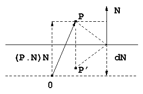
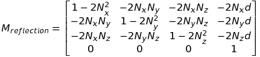
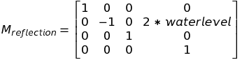
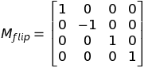
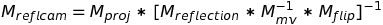

**Computing A Reflection Matrix**
*(useful for rendering water, mirrors, etc)*
A while back I needed to add water to a world used for vehicle simulation, and, as often happens, I found some good posts, but they glossed over some important details that help build intuition. In this article I'll try and build that intuition, specifically for the construction of the matrix used to generate a reflection image with parallax behavior. Of course, with ray tracing you get this kind of thing almost for free, but with the traditional rasterization approach we often resort to hacks like this.
Anyway, back to the water effect. Here's what we're aiming for:
Let's say you have a nice 3D model of an island. I used Small Tropical Island by user herminio to generate the video above. So, you'd like to drop the island just below a large body of water, and you want to see the trees, rocks, and beach of the island reflected in the water as you hover around the island, just above the water level. Let's also assume the water is mostly calm, so that there are no large waves.
It's clear when looking at a photograph of such a scene that the water is reflecting light rays from elements of the island to your eye. We need to quantify this though. Let's say you're looking at the surface of the water, some distance out from the beach, and a little above the water level, and you see the reflection of a coconut tree. Some bundle of light rays strikes a coconut, and some of the reflected light then strikes the water, and then some of that makes its way to your eye. The water surface is of course acting as a reflector.
We would like, when rendering our reflective surface, to be able to somehow look up at a given point on the surface what the reflected light coming toward the eye ought to look like. We'll start by noticing that what the eye sees at that location is the same as what it would see if its position was mirrored about the water plane and looking directly at the scene (no reflection). In other words, if the eye were flipped upside down, positioned a little below water level, and aimed at the same angle as it was previously. See figure below. In both views (the above-water eye looking at the reflection in the water, and the below-water eye looking upward toward the surface), the eye sees the base of the tree (where it meets the ground) near the top of the reflection, and the coconut and leaves near the bottom.
This would suggest that if we rendered the scene into a texture from the point of view of the upside-down underwater eye, we could use that texture in the main render to make the water surface appear reflective. How exactly would this work though?
First we need to reflect the camera about the plane of the water. For now let's just think about the camera's position as a point P. We'll describe the water plane using the general form of the plane, ax + by + cz + d = 0. The plane normal is n = (a, b, c) and d is the signed distance along n from the plane to the origin. If n is pointing away from the origin, d is negative (in this case the origin is said to be "inside" the plane).

In the diagram above, the solid horizontal line represents our water plane, O is the origin, and P is the location of our camera above the water. We want the matrix that transforms P to P', the reflected (mirrored) position. First though we need to compute P'. Because the normal of the plane is pointing away from origin, d is negative, so that dN is pointing in the direction opposite N. Referring again to the diagram (and using the period for dot product), (P.N)N is the vector projection of P onto N, and (P.N)N + dN is the vector from the water plane to P, but since P' is the same distance below the water level , that means P' = P - 2(P.N + d)N.
What would the first row of the matrix M transforming P to P' look like? Well, the x component of P' looks like
P'x = Px - 2(P.N + d)Nx
or
P'x = Px - 2(PxNx + PyNy + PzNz + d)Nx
and multiplying everything out, and then rearranging a bit we get
P'x = Px(1 - 2Nx^2) + Py(-2NxNy) + Pz(-2NxNz) + 1(-2dNx)
The y and z components can be calculated similarly, yielding
P'y = Px(-2NxNy) + Py(1 - 2Ny^2) + Pz(-2*NyNz) +1(-2dNy)
P'z = Px(-2NxNz) + Py(-2NyNz) + Pz(1 - 2Nz^2) + 1(-2dNz)
Grabbing all the coefficients and dropping them into a matrix, we have

but remember that this is for an arbitrary plane, whereas we have the much simpler plane at y = water level = -d (remember d is a signed value, and is negative when the origin is on the inside of the plane). This then is the matrix we actually use

This may look familiar to those who have read water tutorials on the web where this sort of thing is just presented without any sort of build-up. To actually use this we need the position and orientation of the camera, which we can get by inverting the modelview matrix. When we are finished adjusting the position and orientation, we again invert to obtain the new modelview matrix.
Also, recall though we have only been working with a point P. The matrix above will work on a complete coordinate frame though, and in fact it will flip the view upside down, in addition to repositioning it. A side effect of this is that this flip will reverse the winding order of the polygons in the scene, so that polygons that were originally set to be backface culled will now be frontface culled. We obviously don't want this. You can of course explicitly switch the faces to be culled with glCullFace() (and then switch back after rendering the reflection), but you can avoid all that with a handy trick (credit to Lauris Kaplinski). A simple camera flip in y is all you need

Putting all of this together, the final reflection transform looks like

The only other consideration for rendering the reflection texture is that you want to clip all geometry below the water plane. If you don't do this, then the below-water render "sees" geometry under water and renders it into the texture, causing artifacts to appear when the reflection texture is mapped to the water plane later on.
The way to do clip planes with modern OpenGL is pretty straightforward. In the vertex shader, we'll specify the plane equation mentioned earlier, and write to gl_ClipDistance[0] the dot product of that with the vertex in world coordinates. Again, recall that the normal N = (a, b, c) and d = -waterlevel:
~~~~~~~~~~~~~~~~~~~~~~~~~~~~~~~~~~~ glsl
vec4 plane = vec4(0.0, 1.0, 0.0, -waterlevel);
gl_ClipDistance[0] = dot(pos, plane);
~~~~~~~~~~~~~~~~~~~~~~~~~~~~~~~~~~~
where pos is the vertex position in world coordinates. The only other thing needed is to enable the clip plane:
~~~~~~~~~~~~~~~~~~~~~~~~~~~~~~~~~~~ glsl
glEnable(GL_CLIP_PLANE0);
~~~~~~~~~~~~~~~~~~~~~~~~~~~~~~~~~~~
For my scene, I have a set of geometry describing my island scene, and a separate set of geometry (procedurally generated) for the water plane, since I'll want to use different shaders for the two sets.
Assuming you've set up your FBO correctly, you can now render the island geometry into a texture for the reflection pass. The texture will not be flipped upside down since we added the Mflip transform, but it will be parallax-shifted from the above-water view.
Next we'll render the island geometry again, but this time from the main camera. Finally, we'll switch to our reflection program and set the Mreflcam uniform. When the program runs, the vertex shader transforms the incoming vertex in the usual way by multiplying by Mmvp, but it transforms the vertex again by Mreflcam and passes that result separately to the fragment shader. The fragment shader receives this clip space coordinate and transforms to NDC to bring the coordinate range into [-1, 1]. Texture coordinates are [0,1] though, so we'll need to scale by 0.5 and add 0.5 before sampling.